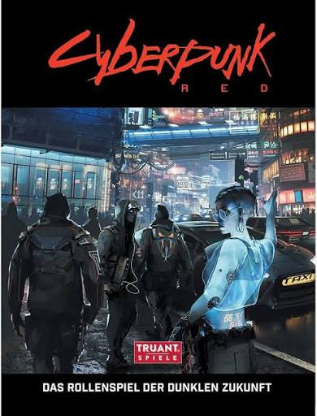

Quarta edição do RPG de mesa, lançado em 2020 depois que a CD projekt RED aquiriu o titulo de Cyberpunk para fazer o jogo Cyberpunk 2077, o RPG serviu como ponte entre Cyberpunk 2020 e 2077.
Se passa em 2045, em uma Night City se recuperando da bomba explodida na torre Arasaka e lidando com a radiação da bomba e a crise pós guerra corporativa.
As classes de personagem são as mesmas das versões anteriores e novamente atualizadas para o ano de 2045.
Em 2024 foi lançado um complemento baseado na primeira temporada da série Cyberpunk Mercenários, que incluia os personagens da série e atualizações para a época que a campanha se passa na linha do tempo